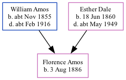

Florence Hannah Amos 1886 -
[ Home ] | [ Calendar ] | [ Surnames Index ] | [ Family History ]A dressmaker own acc and the daughter of William Amos (a railroad platelayer) and Esther Dale (a domestic duties)Florence Amos, the first cousin twice-removed on the father's side of Nigel Horne, was born in Dover, Kent, England on Aug 3, 18861,2,3,4.
Throughout her life, she lived at Union Road, Buckland, Kent, England on Apr 5, 18911; and at 5 Minnis Terrace in Dover on Apr 2, 19112 and on Sep 29, 19393 (when she was living with her mother, Esther Louisa), when she was living with her brother Edgar Dale and sister Nellie May.
Parents
- William Austin was born c. Nov 1855
- Esther Louisa was born on Jun 18, 1860
Citations
- 1891 England, Wales & Scotland Census - Findmypast (was age 4 and the daughter of the head of the household)
- 1911 Census for England & Wales - Findmypast (was age 24 and the daughter of the head of the household)
- 1939 Register - Findmypast (was the daughter of the head of the household)
- England & Wales births 1837-2006 - Findmypast
Media
England & Wales births 1837-2006 - BMD/B/1886/3/AZ/000011/353
1939 Register - TNA/R39/1714/1714D/004/41
Family Tree
Generated by ged2site. Last updated on Nov 13, 2024